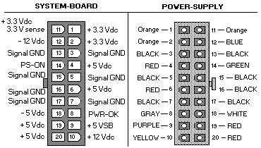
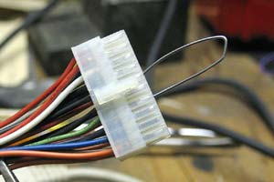
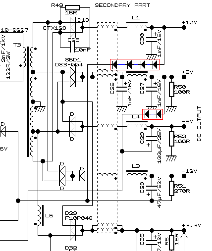
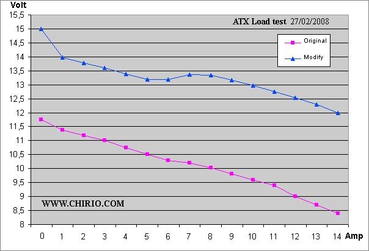
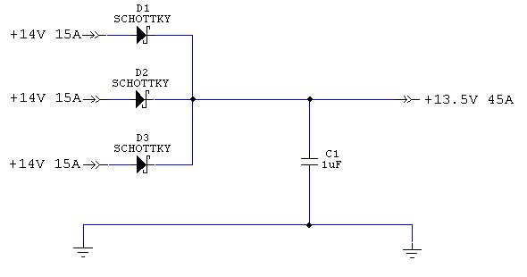

Alimentatori
SWITCHING POWER SUPPLY 13.8V
Come modificare un ATX. How to Modify a Computer ATX Power Supply to a 13.8V Power Supply "Electronics design" di R.Chirio
Indice della pagina
2008-2013
E' facile ottenere 13,8V da un alimentatore ATX, indipendentemente dal tipo di driver usato.
Seguendo le facili istruzioni, è possibile ottenere un alimentatore adatto per carichi che richiedono una tensione fissa da 13,8V con correnti anche fino a 20A (Dipende dalle caratteristiche originali dell' ATX ).
Questa modifica è stata provata con ATX che contengono regolatori PWM tipo TL494, KA7500, 2003, UC3843.
Attenzione:con regolatore PWM a 20 pin tipo SG6105 e anche con il 16 pin marchiato 2005 in alcuni casi la modifica è più complessa e difficile da fare funzionare.
La modifica dello Switching Power Supply ATX comporta avere delle buone conoscenze di elettronica,
è necessaria un'attrezzatura ed esperienza nei montaggi elettronici.
E chiare competenze nell'uso dei dispositivi a 220V.
Non si risponde per danni a cose e persone e per un uso improprio della realizzazione.
Prima di iniziare la modifica è bene provare in funzionamento l'ATX, ed essere sicuri che funzioni a carico. In questo caso bisogna ponticellare a massa il cavo verde (PS-ON), presente sul piedino 14 del connettore principale, e poi dare tensione di rete (220V AC).
Se OK si sentirà la ventola girare.
Attenzione: il fatto che la ventola gira, è buon segno ma non vuol dire che la parte di potenza funzioni, bisogna misurare le tensioni in uscita collegando un carico.
Misurare la tensione sui connettori bianchi e verificare il 5V (+/- 0.5V) tra il cavo rosso e quello nero, e poi il 12V tra il cavo giallo e quello nero. Per la prova del funzionamento a carico bisogna collegare una resistenza di potenza da 20W 10 ohm sui terminali del 12V e verificare che la tensione non scenda sotto il 12V. Va bene anche una lampadina da 20W 12V non di potenza maggiore altrimenti la corrente di spunto manda in blocco l'ATX.
Lasciare il carico collegato, per un po’ di tempo e verificare che non ci siano problemi di cadute di tensione o il blocco della ventola o surriscaldamenti.
Un eventuale ventola rumorosa, è bene che venga sostituita con una nuova, se si bloccasse durante il funzionamento sotto carico, potrebbero esserci danni anche ai dispositivi alimentati dall'ATX modificato.


Per conoscere la corrente massima che potremo assorbire, è sufficiente leggere il valore riportato sulla targhetta del ATX.
In questo caso con il 12V il massimo assorbimento è di 16A.
Possiamo trovare alimentatori da 480-500W che forniscono 18-22A dal 12V.
Attenzione che ci sono alimentatori economici che pur presentando buoni valori di corrente sulla targhetta non sono in grado di arrivare a tali valori..... le buone prestazioni si ottengono con alimentatori pesanti..
{kind=link}
Possiamo trovare molti schemi ATX in questo sito : http://danyk.cz/s_atx_en.html
SCHEMA ELETTRICO ATX modifiche per 13,8V a carico.

Da come si può vedere dallo Schema le modifiche sono minime, si tratta di aggiungere diodi 1N4448 in serie ai sensing del 12V e del 5V, questo per ingannare il controllo facendogli credere che la tensione del 5 e del 12 sono a posto mentre in pratica avremo sul 12 un 12+0,6+0,6+0,6+0,6 pari a 14,5 Volt in uscita a vuoto.
Al posto dei diodi è anche possibile inserire un trimmer cermet da 10K e poi regolare la tensione in uscita con +2-4V maggiore del 12V.
* attenzione che in alcuni ATX è necessario mettere anche 1 diodo 1N4448 in serie al sensing del 3,3V
Realizzazione
La realizzazione dello Switching Power Supply comporta avere delle conoscenze di elettronica, è necessaria un'attrezzatura ed esperienza nei montaggi elettronici.
E chiare competenze nell'uso dei dispositivi a 220V.
Non si risponde per danni a cose e persone e per un uso improprio della realizzazione.
Versione 2008.1
- Iniziare con il togliere il CS dal contenitore metallico, svitare le 4 viti di fissaggio e dissaldare i cavi della rete.
- Con un robusto saldatore staccare tutti i cavi saldati sul CS, lasciare solamente il cavo verde PS-ON e il cavo Viola del 5VSB.
- Si nota che in questa piastra (economica!) manca del tutto il filtro rete, per economia del produttore. Per usare l'ATX modificato con apparati radio, è meglio che ci sia.
{kind=link}
- Scheda pronta per le modifiche.
- Il cavo verde deve essere saldato a Massa per attivare il funzionamento dell'ATX
- Il cavo Viola 5VSB può servire ad alimentare servizi che richiedano 5V max 1A come per esempio un Voltmetro a Led o anche solo il led per la spia di accensione.
- Il cavo nero è una massa e va lasciato senza eliminarlo.
{kind=link}
- Si tratta di interrompere due piste del CS ed aggiungere i diodi.
- Si suggerisce di mettere anche 1 diodo in serie al sensing del 3,3V
{kind=link}
- I Diodi 1N4448 montati al posto delle interruzioni di pista.
- Mettere sotto del nastro isolante per evitare contatti con le altre piste.
- E' necessario mettere del nastro isolante anche sulla faccia metallica del contenitore, per evitare che i diodi vadano massa, una volta rimesso in sede il CS.
- Se montiamo il trimmer al posto dei diodi, quello del 5V sarà regolato a un valore ohmico più basso di quello del 12V, i valori variano da tipo di ATX pertanto è meglio fare alcune prove sotto carico, per trovare la regolazione migliore.
Si è preferito consigliare l'uso dei diodi in quanto più versatile sui vari ATX.
{kind=link}
- Utilizzare almeno 4 cavi originali per le uscite di potenza, rosso per il positivo, da inserire sulla piazzola del 12V e Nero per la connessione verso il morsetto negativo. In questo caso solo tre cavi si sono rivelati un po’ scarsi con la corrente massima di 14A, 4-5 cavi da 1mmq rappresentato una robusta connessione.
- Si nota la bobina di filtro RF realizzata avvolgendo direttamente i cavi di potenza su due Toroidi in ferrite. Ha il compito di bloccare la radiofrequenza di ritorno, che potrebbe disturbare il controllo dell'ATX. Non è comunque indispensabile, consigliato solo per applicazioni RF.
- Se si usa con apparecchi radio collegare condensatori ceramici un 100nF, un 10nF e 1nF, tutti in parallelo alla boccola di uscita. Aggiungere inoltre 2 condensatori 0,1uF verso massa da entrambe le boccole.
{kind=link}
- Si nota il filtro rete montato, il condensatore di blocco e i due condensatori verso massa, aggiunti su questa piastra.
- Il filtro rete serve a bloccare i disturbi entranti e anche a fermare la propagazione dei disturbi generati dall'ATX stesso.
{kind=link}
giugno 2008 - AUMENTO CORRENTE USCITA 16-20A
- Utilizzando due diodi Fast SF1004 da 10A 400V è possibile migliorare l'erogazione di corrente della sezione 12V modificata.
- Togliere il doppio diodo singolo del 12V dalla sua sede, (in genere è un 10A) e ricavare più in alto due fori da 3mm sul radiatore.
- Fissare i nuovi diodi sul radiatore usando la boccola isolata e l'isolante conduttore-termico.
- Collegare in parallelo gli ingressi del diodo e mettere in comune il positivo sul terminale centrale.
{kind=link}
Prova a Carico
- Collegando un Carico Elettronico all'uscita del ATX modificato è possibile eseguire una prova a carico e determinare la Curva della tensione in uscita in funzione della corrente.
- L'ATX è rimasto per 4 ore consecutive a 10A 13V (circa 130W) costanti senza mostrare cedimenti, riscaldamento o derive degne di nota.
{kind=link}

- Interessante il confronto prima e dopo le modifiche alla tensione di Vout. Si nota come l'alimentatore originale anche solo con 10A arrivasse con difficoltà a 10V.
- Dopo le modifiche buono il comportamento a carico, con ancora 12V a 14A di assorbimento, migliorabile, usando cavi di sezione maggiore, almeno 5mmq. e montando due diodi come suggerito sopra.
- La flessione tra 6 e 7A è dovuta alla configurazione interna del regolatore e può variare tra le tipologie ATX sotto test.
Parallelo Alimentatori
2013.
E' possibile collegare più alimentatori in parallelo per aumentare la corrente totale, si può arrivare a 100A mettendo 5-8 alimentatori in parallelo..
Importante che siano tutti uguali e con le stesse modifiche, andrebbero testati uno ad uno, per verificare che sotto carico presentino la stessa erogazione.

Usando diodi SCHOTTKY da 45A 50V si ottiene una ridotta caduta di tensione sotto carico, vanno montati su dissipatore e ventilati.
E' possibile usare diodi fast, ma la caduta di tensione sarà maggiore.(>1Volt)
Il condensatore C1 è formato da 10 condensatori da 0,1uF messi in parallelo sulla morsettiera di uscita.
Per i cavi di collegamento rimanere sui 3A/mmq per avere poca caduta a carico.
Commenti finali
Queste semplici modifiche sono attuabili un po’ su tutti gli ATX, se il driver lo consente.
Il costo della realizzazione può ritenersi molto basso, molto vicino a 0 euro.....
E' un buon alimentatore, senza però la limitazione di corrente, se si va in cortocircuito in uscita l'erogazione viene bloccata. E' necessario spegnere, attendere 15-30 secondi e poi riaccendere.
E' stato provato in collegamento ad apparati ponti radio FM a 13,8V 10A e il rumore di fondo è trascurabile. Non è consigliabile con apparati HF.
Buono il comportamento con assorbimenti impulsivi presentando basse cadute di tensione. Non è comunque adatto per alimentare lampade alogene 12V e frigoriferi di una certa potenza.
Realizzando la modifica con due diodi fast, su certi esemplari è pensabile di raggiungere i 20A di servizio quasi continuo.
La realizzazione è indicata per chi già è un esperto di elettronica e anche per chi non non se la sente di realizzare l'altro progetto più complicato di SPS con uscita variabile.
.............................................................
© Roberto Chirio: all rights reserved.